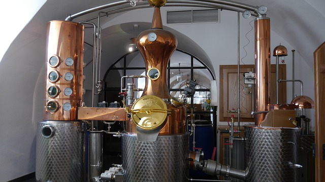
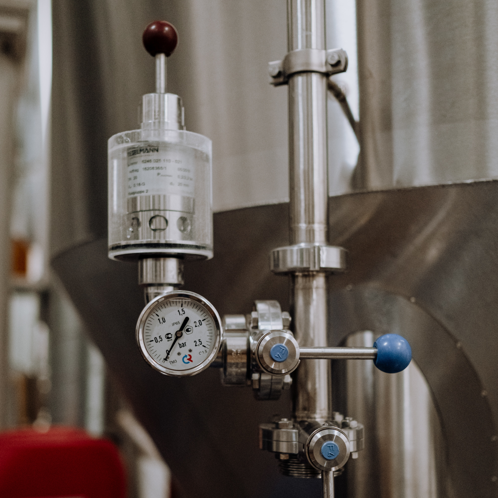
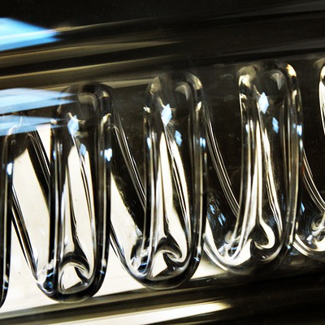
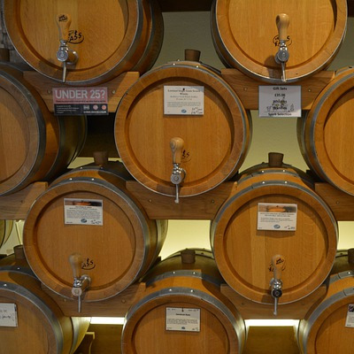

Home distilling of alcohol is a nice hobby. But if you want to make homemade alcohol / spirits in a high quality, it is not done to put the fruit into a barrel and leave it. Sign up and learn the trade!

Distilling step by step
Use only quality products to add to your mash. It will result in a more pure taste.

Fermeting your mash takes some time. This process will convert all sugars to our precious alcohol.

Heat your mash until alcohol flows out of your column. Don't forget to make cuts to avoid bad flavours and scents in your product.

Dilluting and storing your product will give it's final colour and taste.